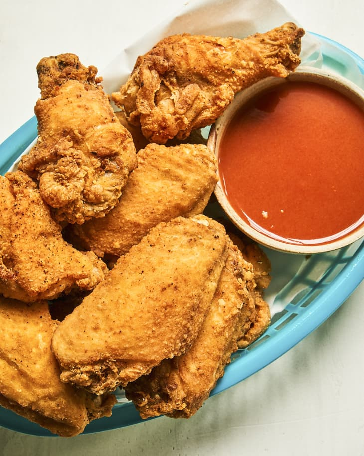

Fried Chicken Wings Recipe

Description
For the tender, juicy wings with the crispiest skin, opt for frying rather than baking. When the light breading hits the hot oil, it locks in moisture and adds crunch. Plus, frying really doesn’t take all that long — this recipe is done in 30 minutes!
Although they’re nicely spiced on their own, these wings still benefit from a juicy and thick sauce like teriyaki, Buffalo, ranch, or whatever flavor profile you dream up!
Ingredients
- 6 cups canola oil, for deep-frying
- 2 pounds chicken wings, drumettes and wings separated (about 12 pieces total)
- 3/4 teaspoon kosher salt, divided
- 1/2 cup all-purpose flour
- 1 teaspoon paprika
- 1/2 teaspoon garlic powder
- 1/4 teaspoon onion powder
- 1/4 teaspoon freshly ground black pepper, plus more as needed
- 1/8 teaspoon cayenne pepper
Steps
- Heat 6 cups canola oil in a large pot or Dutch oven to 350°F. Fit a wire rack over a rimmed baking sheet, or line the baking sheet with paper towels. Season 2 pounds chicken wings with 1/2 teaspoon of the kosher salt and a few grinds of black pepper.
- Place 1/2 cup all-purpose flour, 1 teaspoon sweet paprika, 1/2 teaspoon garlic powder, 1/4 teaspoon onion powder, 1/4 teaspoon black pepper, 1/8 teaspoon cayenne pepper, and remaining 1/4 teaspoon kosher salt in a large bowl and whisk to combine. Add the wings and toss until each wing is well-coated.
- When the oil is ready, fry the wings in 2 to 3 batches: Add to the oil and fry until cooked through, golden-brown, and crisp, 5 to 8 minutes. Use a spider or slotted spoon to transfer wings to the baking sheet. Let cool 5 minutes before serving.
Recipe Notice: For the crispiest, tastiest wings, enjoy these warm out of the fryer. However, leftovers can be refrigerated in an airtight container for up to 5 days. Rewarm in an oven to re-crisp.
Go Back To Home